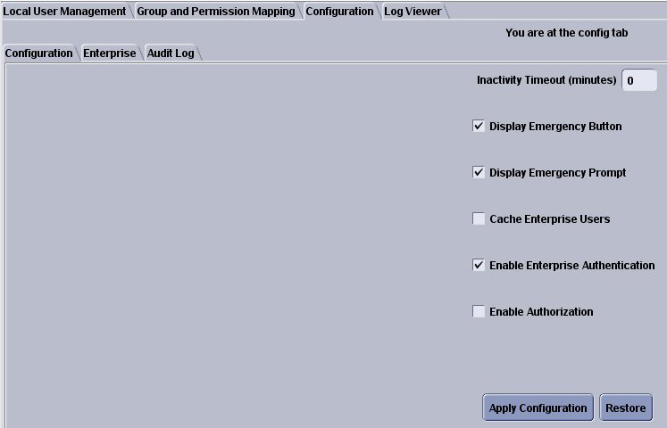
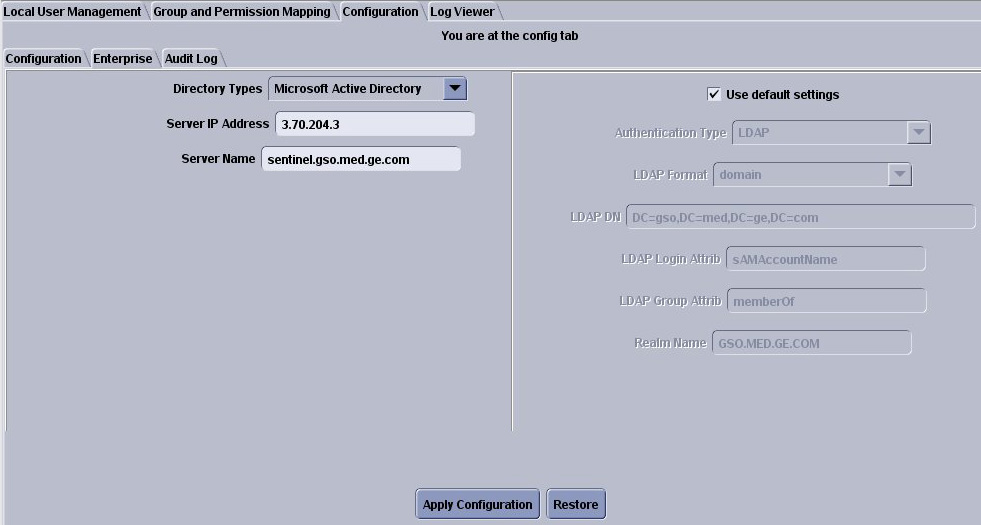

Operating Documentation
Direction 5167277-800, Rev# 8
5167277-800 - FX/Xtream SW & Upgrade Procedures
Operating Documentation |
These instructions assume that the hospital has an enterprise environment and wants to connect to the network.
Enable HIPAA component on the CT System, if necessary.
Start the Admin screen by logging into EA3 as the root user.
Select the Configuration tab.
Select [Enable Enterprise Authentication] , and then select [Apply Configuration] .
| NOTE: | Leave other settings “As Is” ― these should be configured by the hospital. |

Select [Enterprise] sub-tab.

Enter the information gathered for the HIPAA Component EA3, Enterprise Authentication questionnaire, and apply the settings.
The system is now ready for enterprise authentication.
Request the Site IT Specialist to verify the operation by logging in as a test user.
Some environments are unique and require special configuration. Work with engineering support and the Site's IT department.